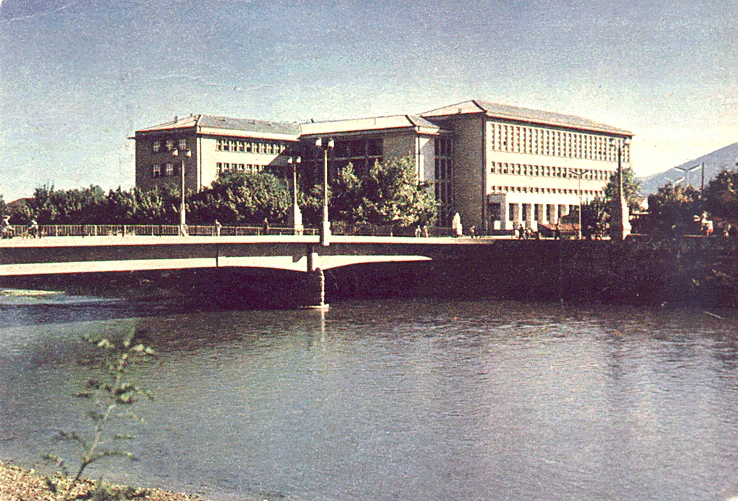

Скопие 1916 - 1917 панорама 1
Документи от Балканските войни
- Година
- 1916-1917
- Времетраене
- 00:11

Хотел Турати. Построен в края на 19 век.

Снимката е направена от сградата на старата гара - днешния Музей на град Скопие, построена през 1873 година по време на Османската империя. На преден план е подходът към гарата с оградени зелени площи. Нататък продължава главната улица към площада. В началото на улицата вляво е хотел „Русия“.

Изглед към главната улица „Македония“. Арката е издигната в чест на някакъв важен гост. Вляво от нея е хотел „Русия“. - началото на 20 век.

Съдебната сграда, 1920-те.

Съдебната сграда, 1920-те.

Сградата на Еврейската община - 1920-те.

Домът на сръбските сестри - 1920-те.

Скопие след 1930 г. Изглед към главната улица, от днешния Музей на град Скопие към площада. Двете по-високи сгради са Гранд хотел „Бристол“, а до него вдясно хотел „Сръбски крал“. Архитектурата на сградите е с еклектично оформени елементи.

Хотелите Сръбски крал и Бристол. - 1920-те.

Къщата на братя Читкушеви. - 1920-те

Къщата на аптекаря Ристич, популярно наричана Ристичевия дворец. Вляво на снимката се вижда част от хотел „Бял орел“. (1920-те)

Ристичевият дворец - около 1925 година.

Ристичевият дворец. Вляво на снимката се вижда част от хотел „Бял орел“. (около 1925 година)

Хотел „Париж“. Сниман е дворът на хотела, където е имало бирария и сладкарница. - 1920-те

Хотел „Москва“ - 1930-те

Османската банка - около 1910.

Малкият площад до Каменния мост, на левия бряг на р. Вардар. На преден план е паметникът на падналите в Балканските войни, а вдясно отзад е Османската банка.
- 1920-те

Новият хотел „Сараево“ в строеж - на площада. Вляво от него е театралното кафене, а над него старият хотел „Сараево“. - 1920-те

Площадът с хотел „Сараево“ и популярното кафене „Маргер“, любимо място на скопяни. Вляво от хотел „Сараево“ е бил хотел „Обединение“. На преден план, на тротоара, седи продавач на гевреци. (около 1935 година)

Казармата на скопската крепост - Кале. - 1920-те

Затворът в Скопие. Намирал се в непосредствена близост до Мустафа паша джамия. - края на 19 век

Хюкюматът (общината). До него е турската поща, а зад нея Мустафа паша джамия. - 1920-те

Хюкюматът (общината). До него е турската поща. На заден план се вижда Мустафа паша джамия. - 1920-те

Хюкюматът (общината). До него е турската поща, а зад нея Мустафа паша джамия. - 1920-те

Сградата на финансовата инспекция. Днес в нея се помещава Институтът за благородни метали. През турския период е бил „Хюкюмат“ (общината). - 1930-те

Гимнастическият салон или скопският соколски дом „Соколана“, построен през 1936 година.

Скопският соколски дом, построен през 1936 година.

Военната болница „Червен полумесец“ - края на 19 век. Сградата се отличава с академичен архитектурен маниер с ренесансови и барокови форми.

Военната болница „Червен полумесец“, построена в края на 19 век. Сградата се отличава с академичен архитектурен маниер с ренесансови и барокови форми. (1920-те)

Военната болница „Червен полумесец“, построена в края на 19 век.

Военната болница „Червен полумесец“, построена в края на 19 век.

Изглед към главната улица, от днешния Музей на град Скопие към площада. Дворецът Кранг, с класически и барокови елементи. В него е било кино „Капитол“. На заден план на снимката се вижда Офицерският дом. - 1930-те

Санаториумът „Вардар“ - 1930-те

Къщата на зъболекаря д-р Рубен, който имал кабинет точно до Каменния мост на левия бряг на р. Вардар. - 1930-те

Пощенска сграда. - 1930-те

Народната банка, построена по проект на архитекта Б. Несторович. Изразен опростен академизъм в оформлението на декоративните елементи и влияния на модернизма. - 1930-те.

Народната банка нощем. Пред нея - част от алеята за разходка на скопяни, популярно наричана „Корзо“. - 1930-те.

Народната банка, построена по проект на архитекта Б. Несторович. Изразен опростен академизъм в оформлението на декоративните елементи и влияния на модернизма. Вдясно е Стопанско-търговската камара (архитект М. Златкович) - 1930-те.

Каменният мост с Народната банка на заден план. - 1930-те

Народната банка, Офицерският дом и част от Каменния мост. - 1930-те

Народната банка с Офицерския дом и Каменния мост. Снимката е направена от левия бряг на р. Вардар, от малкия площад, където е имало стоянка за файтони. (1930-те)

Старата девическа гимназия. - 1930-те

Топлоелектрическата централа в Скопие - 1910 година

Вътрешността на топлоелектрическата централа в Скопие - 1910 година

Фабриката за лекарства. - 1920-те.

Първата бензиностанция „Shell“ в Скопие. - 1927 година

Учение на скопските пожарникари. - 1930-те.

Типична шивашка работилница в старата чаршия - 1920 година

Стоянка на превозвачи с каруци. - 1920-те

Фабриката за обработка на кожи в Скопие. - 1920-те.

Каменоломната в Скопие, в Кисела вода, по склоновете на Водно. - 1920-те.

Летището край Скопие - 1933 година. Намирало се на мястото на днешните квартали Аеродром и Яне Сандански.

Хиподрумът в Скопие. (края на 1920-те)

Кино салон „Вардар“ - 1940-те. Между двете световни войни в Скопие е имало следните кина: Зрински, Аполо (изгоряло през 1930 година, а на негово място е построено кино Корзо), Балкан, Вардар, Капитол, Урания, Авала.

Паметникът на падналите ученици в Първата световна война - 1920-те.

Градска аптека. - 1932 година.

Заводът за осигуряване на работниците (днешната градска болница). - 1930-те

Събранието на Р. Македония, 1940-те. През тези години там е била Областната дирекция.

Днешното Събрание на Р. Македония - годините преди земетресението.

Стара - Нова баня. Част от Скопие на мястото на днешния университет „Св. Кирил и Методий“

Сградата на Управлението на вътрешните работи, построена през 1950-те. По-късно в нея се помещават юридическият, икономическият, философският факултет и ректоратът.

Съдебната палата, веднага след земетресението. Вляво до нея е старата джамия „Елен капан“.

Сградата на Електростопанство (1962 - 1964), в непосредствена близост до градския площад.

Градски търговски център. Строежът започва официално на 11 октомври 1969 година, а на 27 април 1973 година е пусната централната част, откогато комплексът функционира нормално.

Градски търговски център (1969 - 1973) с част от парка „Жена борец“.

Градски търговски център (1969 - 1973) с уреденото зелено пространство на парка „Жена борец“.

Документи от Балканските войни
Филмов преглед бр. 21
 Акведукт4 картички
Акведукт4 картички Кале30 картички
Кале30 картички Мостове60 картички
Мостове60 картички Кей58 картички
Кей58 картички Площад46 картички
Площад46 картички Сгради66 картички
Сгради66 картички Християнски храмове19 картички
Християнски храмове19 картички Мюсюлмански сгради33 картички
Мюсюлмански сгради33 картички Офицерски дом29 картички
Офицерски дом29 картички Театър28 картички
Театър28 картички Железопътна гара13 картички
Железопътна гара13 картички Училища36 картички
Училища36 картички Паркове12 картички
Паркове12 картички Пазари18 картички
Пазари18 картички Улици38 картички
Улици38 картички Панорама I60 картички
Панорама I60 картички Панорама II30 картички
Панорама II30 картички Колажи55 картички
Колажи55 картички Наводнения9 картички
Наводнения9 картички Земетресение27 картички
Земетресение27 картички Скопие 200026 картички
Скопие 200026 картички